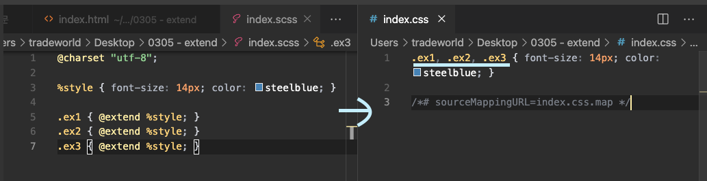

SCSS @extend
한꺼번에 묶어 주는 역할을 해 줌

작성 방법: %이름 { }
@mixin과 @extend의 공통점과 차이점
공통점: 미리 설정된 것을 삽입하는 용도는 같음
차이점
@mixin: 원하는 선택자 안에 삽입,
소스코드의 중복을 막기 위해 사용
@extend: 쉼표 구분으로 구분됨,
연관성 있는 규칙에 만들기 위해 사용
@extend보다 @mixin 쓰는 걸 더 권장
test 1
test 2
test 3